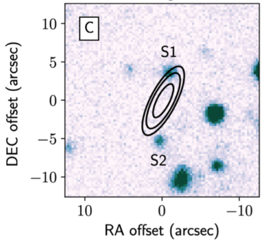

FRB 190523
Image from Ravi et al., 2019, Nature, 572, 352. The image is centered on coordinates (J2000) RA 13:48:15.6, DEC +72:28:11.
Summary
- Detected by: DSA-10
- FRB coordinates (RA, Dec): 13:48:15.60 +72:28:10.9 (J2000)
- Host coordinates (RA, Dec): 13:48:15.43 +72:28:14.4 (J2000)
- Redshift: 0.6600
- Observed DM: 760.8 pc cm-3
- Repeating: No
- References: 2019Natur.572..352R
Host galaxy properties
| Quantity | Measured value | Unit |
|---|---|---|
| Stellar mass | (6.12 ± 4.01) × 1010 | M⊙ |
| Star formation rate | < 0.09 | M⊙/yr |
| E(B-V) | 0.30 ± 0.15 | mag |
| Absolute r-band mag. | -22.06 ± 0.12 | mag |
| u - r color (rest-frame) | 1.92 ± 0.19 | mag |
| Half-light radius | 3.28 ± 0.18 | kpc |
| FRB offset from galaxy center | 27.2 ± 22.6 | kpc |
Emission line fluxes
| Emission line | Measured value |
|---|---|
| Hβ | < 0.03 |
Photometry
| Telescope | Filter (eff. wavelength) | Magnitude (AB) |
|---|---|---|
| Pan-STARRS | g (481 nm) | 22.92 ± 0.17 |
| Pan-STARRS | r (617 nm) | 22.01 ± 0.10 |
| Pan-STARRS | i (752 nm) | 21.14 ± 0.06 |
| Pan-STARRS | z (866 nm) | 20.79 ± 0.06 |
| Pan-STARRS | y (962 nm) | 20.59 ± 0.10 |